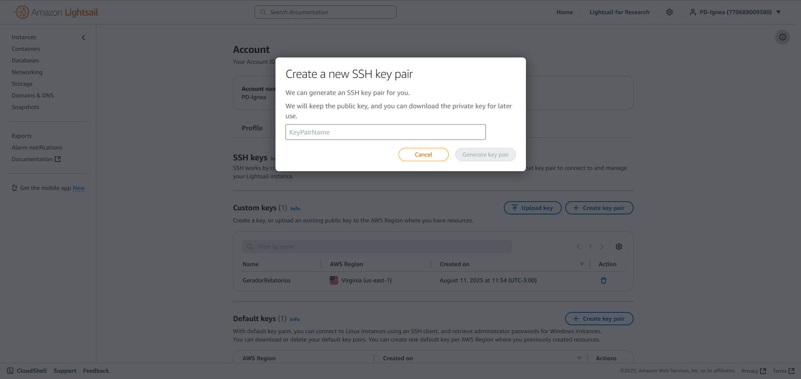

🔵 Deploy¶
O deploy desse projeto é baseado na construção docker desenvolvida. A seguir vamos descrever a rotina para realizar o deploy da aplicação na AWS, considerando que alterações foram feitas nos diferentes sistemas containers da aplicação.
1. Teste e Build Localmente¶
O primeiro passo é testar se o projeto funciona localmente (ou seja, sem baixar a imagem do dockerhub), através do build da imagem local. Para isso, execute o arquivo compose.prod.cloud.yaml:
docker compose -f compose.prod.cloud.yaml up --build
Espere o serviço container buildar e iniciar. Se tudo ocorrer como esperado, você deve conseguir acessar a informação pelo ip fornecido pelo uvicorn (definido como BACKEND_PORT no .env).
2. Envio para Docker Hub¶
Uma vez que a imagem tenha sido corretamente construÁda no passo anterior, deve-se exportar-las para o dockerhub.
OBS: Apenas as images de
backendelo-runnersão exportadas, pois ofrontendé utilizado apenas para realizar o build dos arquivos estáticos durante o inÁcio do container.
Primeiro, cheque a atual versão das duas images com
docker images
Espera-se o que o seguinte formato apareça:
REPOSITORY TAG IMAGE ID CREATED SIZE
geradorrelatorios-backend latest b45ffffacba3 13 minutes ago 478MB
pdignea/relatorios backend-v11 b45ffffacba3 13 minutes ago 478MB
pdignea/relatorios backend-v10 0ffbcccf47eb 22 minutes ago 479MB
pdignea/relatorios backend-v9 af3bf2244e0e 2 hours ago 479MB
geradorrelatorios-frontend latest 367f22870f8c 2 hours ago 569MB
pdignea/relatorios lo-runner-v1 6a1b667a0080 2 hours ago 1.02GB
geradorrelatorios-lo-runner latest 28f8bf0c82bb 2 hours ago 1.02GB
Note que as imagens que estamos interessados iniciam com
geradorrelatorios-*.
Caso você já tenha feito a atualização via docker anteriormente, será possÁvel encontrar a informação da versão anterior dessas images olhando as seguintes linhas:
pdignea/relatorios backend-v11 b45ffffacba3 13 minutes ago 478MB
pdignea/relatorios lo-runner-v1 6a1b667a0080 2 hours ago 1.02GB
Nesse caso, a imagem backend está na versão v11 e a imagem lo-runner na versão v1.
Caso não apareça essa informação, acesse o repositório (privado) no dockerhub, por meio da conta de pesquisa e desenvolvimento, e procure a última versão enviada.
Agora, vamos enviar a versão atualizada das imagens para o repositório com os seguintes comandos:
docker tag <ID_da_imagem_backend> docker.io/pdignea/relatorios:backend-v<versão_backend>
docker push docker.io/pdignea/relatorios:backend-v<versão_backend>
docker tag <ID_da_imagem_lo-runner> docker.io/pdignea/relatorios:lo-runner-v<versão_lo-runner>
docker push docker.io/pdignea/relatorios:lo-runner-v<versão_lo-runner>
Deve-se substituir as informações entre <>:
O
ID_da_imagem_*pode ser encontrado na tabela gerado pordocker image.A
versãodeve ser uma versão acima da anterior. Exemplo, no caso acima parabackendseriav12elo-runnerseriav2.
3. Teste Localmente¶
Antes de modificar o código em produção na AWS Lightsail, é possÁvel testar localmente com o mesmo ambiente.
Para isso, acesse o diretório deploy/ e faça:
Altere as tags no
docker.cloud.yamlpara a versão mais recentens enviadas no item anterior.
backend:
image: docker.io/pdignea/relatorios:backend-v<última_versão>
...
lo-runner:
image: docker.io/pdignea/relatorios:lo-runner-v<última_versão>
...
Faça o
pullda imagem recentemente enviada para o dockerhub
docker compose -f compose.cloud.yaml pull
Suba a imagem localmente:
docker compose -f compose.cloud.yaml up
Se tudo ocorrer corretamente, você deve conseguir acessar a aplicação (como será na AWS) acessando localhost:80 em seu navegador.
OBS: Esse processo pode levar alguns minutos.
4. Deploy na AWS¶
Uma vez que todos os passos anteriores tenham ocorrido corretamente, podemos realizar o deploy na AWS Lightsail. Para isso, certifique-se de ter criado e estabelecido sua publickey (mais informações na em Publickey
).
Primeiro, envie todos os arquivos que forma anterados para a lightsail. Dentre eles, o compose.cloud.yaml sempre é alterado, mas dependendo da sua mudança pode ser necessário enviar outros arquivos.
Para enviá-los faça:
scp -i <caminho_para_sua_publickey> deploy/compose.cloud.yaml ubuntu@3.85.238.151:/home/ubuntu/app
Agora acesse a instância do Lightsail (via SSH ou pelo terminal online disponibilizado no site). Para maior facilidade vamos utilizar a Makefile presenten. Uma vez lá:
Navegue para
/app
cd app
Pare a execução atual
make stop_server
Realize o pull da imagem docker
make pull_image
Teste se a execução do container funciona corretamente (sem ativar execução contÁnua)
sudo docker compose -f compose.cloud.yaml up
Se tudo ocorrer bem e a aplicação funcionar como esperado, realize o último passo.
Inicie a execução da nova imagem
make start_server
Com isso, você deve conseguir acessar o site pelo ip ou domÁnio esperado.
PublicKey¶
Para acessar uma instância da AWS Lightsail via SSH ou enviar arquivos via SCP é preciso criar uma publickey. Essa é a chave que dá acesso a máquina, uma vez que o lightsail não define uma senha pra SSH.
Para criar uma publickey acesse:
https://lightsail.aws.amazon.com/ls/webapp/account/keys .
Crie uma par de chave de acesso

Selecione a região da instância

Defina um nome para sua chave e crie 
Faça um download da chave
Você irá baixar um arquivo
.pem.
Você deve deixá-lo em um lugar de fácil acesso. O caminho padrão (tanto no linux-wsl quanto no windows) é ~/.ssh/<nome_da_chave>.pem, o recomendado é colocá-la nesse lugar.
Quando for utilizar ssh ou scp faça da seguinte forma:
ssh -i ~/.ssh/<nome_da_chave>.pem <ip>
scp -i ~/.ssh/<nome_da_chave>.pem <arquivo1> <arquivo2>